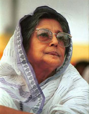

|
|
শহীদ জননী
জাহানারা ইমাম স্মৃতি পদক পেল মুক্তমনা

শহীদ জননী জাহানারা
ইমামের ১৩তম মৃত্যুবার্ষিকী উপলক্ষে একাত্তরের ঘাতক দালাল নির্মূল কমিটি ২৬ শে
জুন (মঙ্গলবার) ধানমণ্ডি বিলিয়া মিলনায়তনে এক স্মারক বক্তৃতার আয়োজন করে। ঘাতক
দালাল নির্মূল কমিটির উপদেষ্টামণ্ডলীর সভাপতি এবং গণআদালতের বিচারক জাতীয়
অধ্যাপক কবীর চৌধুরীর সভাপতিত্বে অনুষ্ঠিত এই অনুষ্ঠানে বক্তব্য রাখেন মৌলবাদ ও
সাম্প্রদায়িকতাবিরোধী দক্ষিণ এশীয় গণসম্মিলনের সভাপতিমণ্ডলীর সদস্য অধ্যাপক অজয়
রায়, ঘাতক দালাল নির্মূল কমিটির সহ-সভাপতি শহীদজায়া শ্যামলী নাসরিন চৌধুরী,
জাহানারা ইমামের পুত্র সাইদ ইমাম জামি প্রমুখ। অুনষ্ঠান উপস্খাপন করেন ঘাতক
দালাল নির্মূল কমিটির সভাপতি শাহরিয়ার কবির। স্মারক বক্তৃতা পাঠ করেন ওয়ার
ক্রাইম ফ্যাক্টস ফাইন্ডিং কমিটির আহ্বায়ক ডা. এমএ হাসান। স্মারক বক্তৃতা শেষে
মুক্তিযুদ্ধের চেতনা বাস্তবায়নে বিশেষ অবদান রাখার জন্য মুক্তিযুদ্ধের
উপ-প্রধান সেনাপতি এয়ার ভাইস মার্শাল (অব.) একে খন্দকারকে জাহানারা ইমাম স্মৃতি
পদকে ভূষিত করা হয়। এছাড়া প্রতিষ্ঠান হিসেবে মুক্তিযুদ্ধের চেতনা বাস্তবায়নে
অশেষ অবদান সৃষ্টি ছাড়াও মুক্তচিন্তার আন্দোলনে এবং মানবাধিকার প্রতিষ্ঠায়
উজ্জল ভূমিকা রাখার জন্য মুক্তমনা ওয়েবসাইটকে জাহানারা ইমাম স্মৃতি পদক দেয়া হয়।
একে খন্দকার দেশে না থাকায় তার পক্ষে পুরস্কার গ্রহণ করেন মুক্তিযোদ্ধা সংহতি
পরিষদের সভাপতি কর্নেল (অব.) শওকত আলী। মুক্তমনা ওয়েবসাইটের পদক গ্রহণ করেন
অধ্যাপক অজয় রায়। সভায় মুক্তমনার পক্ষ থেকে
ড. আজয় রায় যে
বক্তৃতা দেন তা নীচে তুলে ধরা হল -
জাহানারা ইমাম স্মারক সভায়
ড. অজয় রায়ের বক্তৃতা
শ্রদ্ধেয় সভাপতি,
আমি আমার বক্তব্যের শুরুতে শহীদ জননীকে কৃতজ্ঞতার সাথে স্মরণ করছি। তিনি যে
আন্দোলন শুরু করেছিলেন তার সার্থক পরিণতি হয় নি। এ ব্যর্থতা তাঁর নয়,
আমাদের-আমরা এই আন্দোলনকে ধরে রাখতে পারি নি। আমার দুঃখ রাজাকার সম্রাট গোলাম
আজম আজও দাঁত কেলিয়ে হাসেন, বৈদেশিক দূতাবাসগলোতে দাওয়াতে উৎফুল্ল
চিত্তে অংশ নেন।
আজকের স্মারক বক্তৃতা দিয়েছেন ড. এম এ হাসান - এখানে তিনি গণহত্যার বিচারের
প্রক্রিয়া নিয়ে অনেক তথ্যবহুল আলোচনা করেছেন। একদিকে এর জটিল পদ্ধতির দিকে
আমাদের ও সরকারের দৃষ্টি আকর্ষন করেছেন, আবার একই সাথে সম্ভাব্য উত্তরণের
পথগুলোও খুটি নাটি বিচার করেছেন। আপনারা তার বক্তৃতা শুনেছেন, কাজেই এর
পুনরাবৃত্তি নিষ্প্রোয়জন। ড. হাসান যে কথাটির ওপর জোর দিয়েছেন তা হল জেনোসাইডের
তথ্য সংগ্রহ করা। কোন সরকারই এ কাজটির গুরুত্বের সাথে নেয় নি, ফলে অনেক তথ্য
হারিয়ে গেছে অনেক ব্যক্তি মৃত্যু বরণ করেছেন যারা হতে পারত মূল্যবান সাক্ষ্য।
যে তথ্য সংগৃহীত হয়েছে তা বেসরকারীভাবে। আপনারা হয়তো অনেকে জানেন না যে, তিনি
নীরবে গত কয়েক বছর ধরে এই কাজে লেগে আছেন এবং ্িবপুল সংখ্যক জেনোসাইডের তথ্য
সংগ্রহ করেছেন, যা আমি বিশ্বাস করি কোন সময় গণহত্যার বিচার শুরু হলে এসব দলিল
কাজে আসবে। আসুন আমরা এই নীরব কর্মীকে কলতালির মধ্য দিয়ে ধন্যবাদ জানাই।
মাননীয় সভাপতি,
মুক্তমনাকে এবার মানবিকতা প্রতিষ্ঠার আন্দোলনে তাৎপর্যময়
অবদান রাখার স্বীকৃতি স্বরূপ এ বৎসরের
জাহানারা স্মৃতি পদক প্রদানের সিদ্ধান্তকে এবং মুক্তমনার পক্ষ থেকে এই পুরস্কার
গ্রহণের আমন্ত্রণ জানানোয় আমার ব্যক্তিগত পক্ষ থেকে এবং মুক্তমনার পক্ষ থেকে
ঘাতক দালাল নির্মূল কমিটিকে ধন্যবাদ ও কৃতজ্ঞতা জানাতে চাই। আমরা এই সম্মাননা
গ্রহণের যোগ্য কিনা জানি না, কিন্তু আপনাদের স্বীকৃিত আমাদের উৎসাহ
যোগাবে এবং অনুপ্রাণিত করবে। আমি বিনয়ের সাথে সশ্রদ্ধ চিত্তে মুক্তমনার এবং এর
অজস্র সদস্য ও শুভানুধ্যায়ীদের পক্ষ থেকে এই সম্মাননা গ্রহণ করছি। মাননীয় সভাপতি
আপনাকে অশেষ ধন্যবাদ।
আমি এই সুযোগে মক্তমনার কর্ম তৎপরতার
কিঞ্চিৎ
পারিচয় সাধারণ শ্রোতাদের সামনে তুলে ধরছি।
মুক্তমনার কর্ম তৎপরতার
কিছু উদাহরণ:
প্রতিষ্ঠা দিবসঃ ২৫শে মে, ২০০১
পেছনে কারা: মাত্র ৩০ জন সদস্য, মূলত প্রবাসী বাঙালীদের নিয়ে
প্রতিষ্ঠাতা মডাটেরঃ অভিজিৎ
রায়
বর্তমান আন—র্জাতিক মিলন মেলা : ভারত পাকিস্তান, ইল্যান্ড, নেপাল, ইরান, সৌদি
আরব, দুবাই, জাপান, জার্মানী, সিঙ্গাপুর, যুক্তরাষ্ট্র, যুক্তরাজ্য, কানাডা,
মালয়েশিয়া, তাইল্যান্ড, ভিয়েৎনাম
.. সারা বিশ্বের : আক্ষরিক অর্থেই একটি আন্তর্জাতিক প্রগতিশীল মৌলবাদ বিরোধী
আন্তর্জালিক সংগঠন।
বর্তমান মডাটেরঃ মেহুল কামদার, জাহেদ আহমেদ, তানবিরা তালুকদার এবং ফরিদ আহমেদ
উপদেষ্টা পরিষদ ও সম্পাদকীয় বোর্ড : অভিজিৎ
রায়, মেহুল কামদার, জাহেদ আহমেদ, ফরিদ আহমেদ, ফাতেমোল্লা, বন্যা আহমেদ, ড. জাফর
উল্লাহ, আবুল কাশেম, অপার্থিব, মাহবুব সাঈদ, অজয় রায় প্রমূখ .. .।
আমাদের লড়াই: কুপমণ্ডুকতা, কুসংস্কার, অন্ধবিশ্বাস, শাস্ত্রানুগত মৌলবাদ ও
সাম্প্রদায়িতকার বিরুদ্ধে, মানবতার পক্ষে আর সেক্যুলারিজমের পক্ষে, সিভিল
লিবার্টির পক্ষে, লিবারেল ডেমোক্রেসির পক্ষে .. ।
আমরা বিংশ শতাব্দির বাংলার উদারচেতা পুনর্জাগনের উত্তরসূরী, ডিরোজিওর চিন্তা
চেতনার অনুসারী, আমরা মনে করি শিখা গোষ্ঠীর ঐতিহ্যের ধারক “জ্ঞান যেখানে
সীমাবদ্ধ, বুদ্ধি যেখানে আরষ্ট, মুক্তি সেখানে অসম্ভব”, আমরা আরজ আলী
মাতুব্বরের আদর্শের সৈনিক, আমরা বেগম রোকেয়া, লীলারায়, ফুলরেনূ গুহের, সুফিয়া
কামালের, জাহানারা ইমামের পথে চলতে প্রত্যয়দীপ্ত .. .. ।
আমরা শুধু ধর্মান্ধতা আর মৌলবাদের বিরুদ্ধে যুক্তি শানাই না, আমরা মানবতার
সপক্ষে লড়াইয়ে নামি :
১. ব্লেসফেমির বিরুদ্ধে মানবতাকে বাঁচাতে পাকিস্তানের কারাদণ্ড প্রাপ্ত
ফ্রিথিঙ্কার ড. ইউনুস শেইখকে বাঁচাতে বিশ্বময় আন্দোলন গড়ে তুলি। আমাদের
সক্রিয় সহযোগী ছিল ‘IHEU,
Rationalist International, Amnesty International, Dhaka Rationalist and
Secularist Union’ এবং ঢাকার
মুক্তমনাদের ‘Save
Dr. Yunus Shaikh Committee’,
য়ারা রাস্তায় নেমে দিনের পর দিন আন্দোলন, মিটিং, মিছিল, সেমিনার, পথসভা ও
পাকিস্তানী দূতাবাসের সামনে প্রেসিডেন্ট মোশাররফের বিরুদ্ধে বিক্ষোভ
প্রদর্শন করেছে। এর সাথে যুক্ত হয়েছিলেন কবির চৌধুরী, বিচারপতি আবদুস
সোবহানসহ দেশের খ্যাতনামা বুদ্ধিজীবী ও প্রগতির পক্ষের মানুষ।
আমাদের সাফল্য এসেছিল। পাকিস্তান সরকার তাঁকে মুক্তি দিতে বাধ্য হয়।
বর্তমানে তিনি বিলেতে রয়েছেন এবং আমাদের একজন সক্রিয় সদস্য।
২. আমরা আন্দোলন গড়ে তুলি শাহরিয়ার কবিরের সপক্ষে তাঁর মুক্তির লক্ষ্যে,
যখন খালেদা নিজামী সরকার তাবে বিমান বন্দরে গ্রেপ্তার করে দেশদ্রোহিতার
অভিযোগে। আমরা সফল হই তাঁকে মুক্ত করতে দেশে বিদেশে গড়ে ওঠা সফল আন্দোলনের
ফলে।
৩. পরে দ্বিতীয়বার শাহরিয়ার কবির, মুনতাসীর মামুন ও সাংবাদিক সহ অনেক
অবরুদ্ধ অত্যাচরিত ব্যক্তিদের পক্ষে মানবতার মুক্তির পক্ষে আন্দোলনে নামি
এবং এখানেও আমরা সফল হই।
৪. আমরা এককভাবে ‘প্রশিকার পক্ষে’ নেটওয়ার্কে আন্দোলন গড়ে তুলি অ্যামনেস্টি
ইনটার ন্যশনালের সহযোগিতায়। প্রশিকা মহাপরিচালককে মুক্তি দিতে বাধ্য হন
সরকার।
৫. আমরা সাম্প্রদায়িকতার নগ্ন প্রকাশ সামপ্রদায়িক নির্যাতনের বিরূদ্ধে
সবর্দদাই উচ্চকণ্ঠ : আমরা মৌলবাদীদের হাতে মুসলমান বা হিন্দু যেই নির্যাতিত
হয়েছে তাঁর পক্ষে দাড়িয়েছি, মৌলবাদী সম্প্রদায়িক শক্তির বিরুদ্ধে দাঁড়িয়েছি
আমাদের সীমিত শক্তি নিয়ে। গুজরাটে আহমদেবাদের জিঘাংসা বৃত্তিকে আমরা
ধিক্কার জানিয়েছি। নরেন্দ্রমোদীর বিরুদ্ধে তাঁকে অপসারণেরর দাবিতে আমরা
ভারতীয় প্রেসিডেন্ট ও প্রধানমন্ত্রীকে স্মারক লিপি ও প্রতিবাদপত্র পাঠিয়েছি,
ভারতীয় ও আন্তর্জাতিক সংস্থাগুলোর সাথে একসাথে কাজ করেছি সাম্প্রদায়িকতা
বিরোধী আন্দোলন গড়ে তুলতে।
৬. একইভাবে ২০০১ সালে খালেদা-নিজামীর লেলিয়ে দেয়া সামপ্রদায়িক শক্তি—
বাংলাদেশের সংখ্যালঘুদের ওপর হত্যা, লূণ্ঠন, ঘরবাড়ি অগ্নি সংযোগ, উপাসনালয়
ধ্বংস সাধন ও অপবিত্রকরণের যে ঐতিহাসিক নিদর্শন স্থাপন করেছে তার বিরুদ্ধে
দেশের সেক্যুলার শক্তির সাথে হাত মিলিয়ে এর বিরূদ্ধে রূখে দাড়িয়েছি। আমাদের
প্রতিষ্ঠাতা উপদেষ্টা অধ্যাপক অজয় রায় অন্যান্য মুক্তমনা ও বুদ্ধিজীবীদের
সাথে নিয়ে গড়ে তুলেছিলেন সাম্প্রদায়িকতা বিরোধী আন্দোলন ‘নাগরিক অধিকার
সংরক্ষণ ও সামপ্রদায়িকতা প্রতিরোধ কমিটি’র ব্যানারে। তারা গঠন করেছিলেন
অধ্যাপক জিল্লুর রহমানের নেতৃত্বে ‘গণ তদন্ত কমিশন’, যার প্রতিবেদন
প্রকাশিত হয় ডিসেম্বর ২০০২ সালে এবং তাৎক্ষণিকভাবে
অমাদের ওয়েব সাইটের মাধ্যমে বিশ্বব্যাপী প্রচারিত হয় (https://gold.mukto-mona.com/human-rights/report.htm)
। প্রবাসী মুক্তমনার সদস্যরা প্রধানমন্ত্রী খালেদা জিয়া ও বাংলাদেশের
রাস্ট্রপতিকে প্রতিবাদ পত্র প্রেরণ করেন সংখ্যালঘুদের বিরুদ্ধে চালিত
নির্যাতন বন্ধের দাবীতে। তাঁরা ঘৃনা প্রকাশ করেছেন মৌলবাদী শক্তিকে সরকার
প্রশ্রয় দেয়ায়।
৭. আমরা শুধূ তাত্ত্বিক আন্দোলন করি না । আমরা আর্ত মানবতার পাশে
পার্থিবভাবেই এগিয়ে আসি। (ক). সাম্প্রদায়িকভাবে নির্যাতিত ভোলায
অন্নদাপ্রসাদ ও ফাতেমাবাদ গ্রামে ১০০টি পরিবারকে নিজের পায়ে দাঁড়াতে এগিয়ে
এসেছি ‘দৃষ্টিপাত’ নামক আমাদের সহযোগী প্রতিষ্ঠানের পাশে। এই প্রকল্পে
১০০টি ঘরবাড়ি নির্মান, জমি ক্রয় করে দেয়া, ছেলেমেয়েদের পড়াশনার ব্যয় ইত্যাদি
কর্মকাণ্ডে আমরা সংশ্লিষ্ট ছিলাম। আমরা এসে দাড়িয়েছিলাম পুর্নিমার পাশে,
রিতার পাশে, মাধূরীর পাশে, রাজকুমার বাবুর পাশে, নরহরি কবিরাজের পাশে, জনের
পাশে, সিতাংশু মরমুর পাশে, ফাতেমার পাশে, মিনতির পাশে .. কত নাম করব- এরা
সবাই নরপশূদের পাশবিক অত্যাচারের শিকার।
৮. আমরা সাংবাদিক মানিক সাহার পরিবারের পাশে এসে দাঁড়িয়েছিলাম, তাঁর দুটি
কন্যার পড়াশুনা চালিয়ে যেতে সাহয়্যের হাত বাড়িয়েছি। সাংবদিক বিভুরঞ্জনের
পাশে দাড়িয়েছি।
৯. দুর্ঘটনা কবলিত মানবতাবাদী শাহরিয়ার কবির, কাজী মুকুল ও তাদের
সহকর্মীদের পাশে এসে দাঁডিয়েছি যৎসামান্য
শক্তি নিয়ে, আমরা ইসলামী মৌলবাদের শিকার হুমাযূন আজাদের অসহায় পরিবারের
প্রতি সহযোগিতার হস্ত প্রসারিত করেছি। হুমায়ুন অজাদ ফাউন্ডেশন গড়ে তুলতে
সহায়তা করেছি যতদূর আমাদের সাধ্যে কুলায়।
১০. ব্রহ্মপুত্রের চরে বন্যাবিদ্ধস্ত এবটি নিম্ন মাধ্যমিক স্কুল আমরা
পুননির্মাণ করেছি, এবং আমরা এর পরিচালনার দায়ভার গ্রহণ করেছি। সেখানে
মুক্তিযুদ্ধের শহীদ স্মৃতি স্থম্ভ গড়ে তোলার প্রকল্প গ্রহণ করেছি এবং সে ্উপলক্ষে
কয়েক হাজার স্থানীয় মুক্তিযোদ্ধার সম্মেলন করেছি এবং স্মৃতি স্তম্ভের
শিলান্যাস করেছি।
১১. চোলেশ রিছিলের মৃত্যুর বিচার চেয়ে পিটিশন করেছি, তার পরিবারকে
আর্থিকভাবে যথাসম্ভব সাহায্য করেছি।
১২. আমরা পিটিশন করেছি, বক্তব্য রেখেছি কিংবা জনসংয়োগ করেছি ভারতে অবৈধ
নদী-সংযোগের প্রতিবাদে, গুজরাটে মুসলিম জনগণের উপরে নির্বিচারে গণহত্যার
প্রতিবাদে, কানসাটে নিষ্ঠুরভাবে কৃষক-বিদ্রোহ দমনের প্রতিবাদে, জাফর ইকবাল
এবং হাসান আজিজুল হককে সাম্প্রদায়িক মহল থেকে মৃত্যু-হুমকি দেওয়ার প্রতিবাদে,
সি.আর.পি -এর প্রতিষ্ঠাতা ভ্যালরি টেলরের অপসারণের প্রতিবাদে, কিংবা সালমান
রুশদি অথবা তাসলিমা নাসরিনের উপর ফতোয়ার প্রতিবাদে।
আমরা আত্ম প্রচারের জন্য এসব কথা উচ্চারন করিনি, আমাদের কর্মধারার কিঞ্চিৎ
পরিচয় তুলে ধরলাম মাত্র। তবুও যদি আত্ম প্রচারণার সুর বেজে ওঠে বিনীত ভাবে ক্ষমা
চাই। মানবতার পক্ষে, মৌলবাদের বিরুদ্ধে আপনাদের পাশে থেকে আমাদের সংগ্রাম চলবেই।
আপনাদের অশেষ ধন্যবাদ।
আমার অবদানকে একটু বেশী আলোতে আনা হয়েছে, এজন্য আমি বিব্রত বোধ করছি। আমি
স্পষ্ট ভাষায় বলতে চাই যে প্রতিষ্ঠানটির মূল চালিকা শক্তি হল নিবেদিত প্রাণ
মুক্তিপাগল একদল তরুণ, যারা বিশ্বাস করে বুদ্ধি মুক্তির আন্দোলনে, মুক্তবুদ্ধির
চর্চায়, বিজ্ঞানমনস্কতায় ও যুক্তিবাদে। সুধীমণ্ডলী আপনাদের অশেষ ধন্যবাদ।
জুন ২৬, ২০০৭
========================================
|
|
|